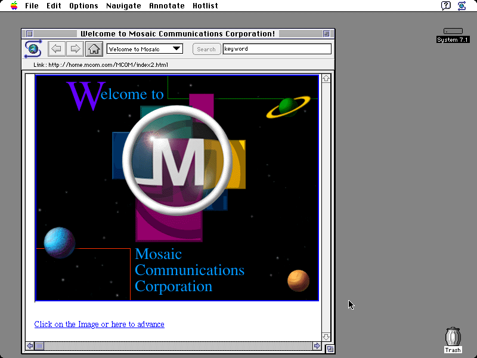

My name is Luis Elizondo and I'm a programmer working at IIIEPE (Institute for Research, Innovation and Graduate Studies in Education) in Mexico
Open Source Software in Education
my perspective
History
Visicalc
1979Sharing
Internet, email and File Transfer Protocol
Microsoft Windows made it easier to use a computer...
 1993
1993... and Mosaic Web Browser, created by Marc Andreessen, made it easier to surf the web
Richard Stallman (RMS) creates the Free Software Movement in 1983
Four basic freedoms
the freedom to run the software, to study and change the software,
and to share copies of the software
You can create high quality software using this method like
- - Apache HTTP Server
- - Linux
... used by Governments, airplanes, submarines, phones or companies like
Facebook, Google, Wikipedia, Twitter, Yahoo, Universities, CERN, and many more...
Software made the World more productive
In any business, productivity usually means more money...
... schools are different
If we accept the idea that software can help both the teacher and the student, it will be easier to justify the investment required in hardware and software.
Good news
Open Source Software is Free
No Licenses. No Limits.
Web software
Google Apps for Education is also free!
Open Data
Applying the spirit of Open Source Software to Knowledge and Data
Sharing problems and solutions
Software Developers, Doctors and Scientists do it all the time
What are we doing at IIIEPE?
A few examples on how we use Open Source Software and Open Data to improve Education
EVA
Learning without going to the classroom
Schools can have a free learning platform and students can benefit from it
SiaEducacion
Digital Repository and Community
Teachers share data more easily and have a platform where they can work
Thanks
http://twitter.com/lelizondo
luis.elizondo@iiiepe.edu.mx
www.iiiepe.edu.mx